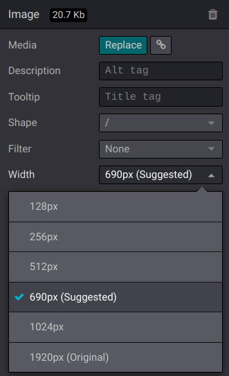

Search Engine Optimization (SEO)¶
Search Engine Optimization, often abbreviated as SEO, is a digital marketing strategy to improve a website’s visibility and ranking in search engine results (e.g., in Google). It involves optimizing various elements on your website, including its content, social sharing, URLs, images, and page speed.
Note
Content optimization¶
To optimize a webpage’s SEO, access the page, then go to .

Keywords¶
Keywords are one of the main elements of SEO. A website that is well optimized for search engines speaks the same language as potential visitors, with keywords for SEO helping them to connect to your site.
You can enter the keywords you consider essential in the Keyword field and click ADD to see how they are used at different levels in your content (H1, H2, page title, page description, page content) and the related searches in Google. The tool also suggests relevant keywords to drive your web traffic. The more keywords are present on your webpage, the better.
Tip
It is strongly recommended to only use one H1 title per page for SEO.
Images¶
The size of images has a significant impact on page speed, which is an essential criterion for search engines to optimize SEO ranking.
Tip
Compare how your website ranks using Google Page Speed or Pingdom Website Speed Test.
Odoo automatically compresses uploaded images to reduce their weight and improve the page loading speed. All images used in Odoo official themes are also compressed by default. If you are using a third-party theme, it may provide images that are not compressed efficiently.
To modify an image from your website, select the image, click Edit, then go to the Customize tab, and adapt the width in the Image section.
Important
Alt tags are used to provide context to what an image is displaying, informing search engine crawlers and allowing them to index an image correctly. Adding alt tags keywords in the Description field is essential from an SEO perspective. This description is added to the HTML code of your image, and it is shown when the image cannot be displayed.
Advanced features¶
Structured data markup¶
Structured data markup is used to generate rich snippets in search engine results. It is a way for websites to send structured data to search engine robots, helping them understand your content and create well-presented search results.
By default, Google supports many rich snippets for content types, including Reviews, People, Products, Businesses, Events, and Organizations.
Microdata is a set of tags, introduced with HTML5, that help search engines better understand your content and display it in a relevant way. Odoo implements microdata as defined in the schema.org specification for events, eCommerce products, forum posts, and contact addresses. This allows your product pages to be displayed in Google using extra information like the price and rating of a product:

robots.txt¶
A robots.txt file tells search engine crawlers which URLs the crawler can access on your site, to index its content. This is used mainly to avoid overloading your site with requests.
When indexing your website, search engines take a first look at the robots.txt file. Odoo
automatically creates one robot.txt file available on mydatabase.odoo.com/robots.txt.
By editing a robots.txt file, you can control which site pages are accessible to search engine crawlers. To add custom instructions to the file, go to , scroll down to the SEO section, and click Edit robots.txt.
Example
If you do not want the robots to crawl the /about-us page of your site, you can edit the
robots.txt file to add Disallow: /about-us.
Sitemap¶
The sitemap points out website pages and their relation to each other to search engine robots. Odoo
generates a /sitemap.xml file, including all URLs. For performance reasons, this file is cached
and updated every 12 hours.
Note
If your website has a lot of pages, Odoo automatically creates a Sitemap Index file, respecting the sitemaps.org protocol, grouping sitemap URLs in 45000 chunks per file.
Every sitemap entry has three attributes that are computed automatically:
<loc>: the URL of a page.<lastmod>: last modification date of the resource, computed automatically based on the related object. For a page related to a product, this could be the last modification date of the product or the page.<priority>: modules may implement their priority algorithm based on their content (for example, a forum might assign a priority based on the number of votes on a specific post). The priority of a static page is defined by its priority field, which is normalized (16 is the default).
Tip
To prevent pages from appearing in a sitemap, go to , click the Publish tab, and turn off the Indexed feature.